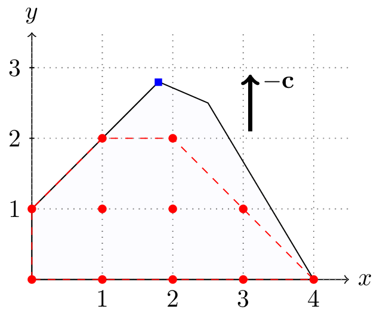
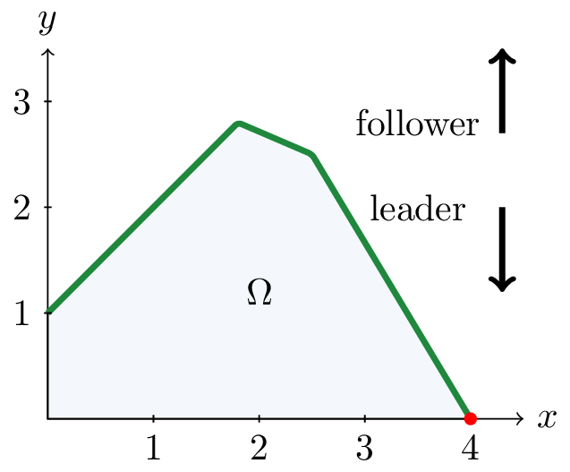
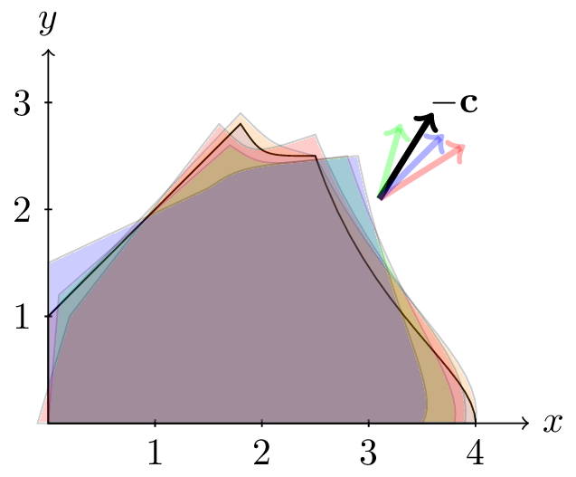
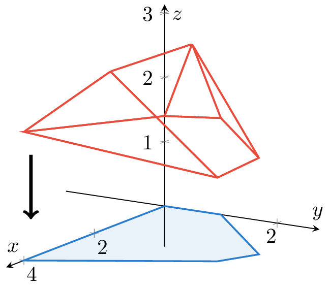

and build custom algorithms Solve bilevel and two-stage robust optimization problems with the command line interface, or build new custom algorithms with the C++ library. Get started To the C++ API Compatible with Gurobi • Cplex • HiGHS • GLPK • CBC • MibS • JuMP
Browse per problem type

Interface with solvers like Gurobi and HiGHS, or write your own branch-and-bound algorithm.

Solve bilevel problems by KKT reformulations or with bilevel solvers like MibS.

Handle uncertain problems using dualization or column-and-constraint generation algorithms.

Solve large-scale problems efficiently with column generation and branch-and-price techniques.
Quick Start
-
Linux echo "deb [arch=amd64 trusted=yes] https://henrilefebvre.com/apt stable main" | sudo tee /etc/apt/sources.list.d/idol.listsudo apt-get updatesudo apt-get install idolidol_cl --version
-
Mac brew tap hlefebvr/idolbrew install idolidol_cl --version
-
From Source git clone https://github.com/hlefebvr/idol.gitmkdir -p idol/build && cd idol/buildcmake .. && cmake --build .sudo cmake --install ../idol_cl --version
Highlights
- Unified CLI Solve MILP, bilevel, and robust problems in one interface
- Composable C++ framework Build, combine, and nest optimization algorithms
- Solver interoperability Work with Gurobi, Cplex, HiGHS, and more
- Flexible modeling Use your own branch-and-bound, branch-and-price, or decomposition methods
Is this a MIP Solver?
idol and idol_cl are not a MIP solvers in themselves. In fact, they typically need to call external solvers as a subroutines in more complex algorithms like, e.g., branch-and-cut-and-price algorithms, column-and-constraint generation or various reformulations.
The idea is to work hand in hand with existing and well-engineered optimization software to enhance their possibilities. Not to replace them!
Another advantage of using idol is that you can easily switch between different solvers. Write your model once and try different solvers.
The following MIP solvers are currently supported through idol and idol_cl:
- Cplex,
- GLPK,
- Gurobi,
- HiGHS,
- JuMP (Julia framework),
- coin-or/Osi (gives you acccess to any Osi-compatible solver).
- coin-or/MibS (the mixed-integer bilevel solver).
The idol C++ Library
idol is the library underlying the command-line interface idol_cl.
It is a C++ framework for mathematical optimization designed to help you build new algorithms for solving complex problems. The main philosophy behind idol is interoperability and ease of use. Any algorithm can be seamlessly combined with any other algorithm to create a new one.
For instance, you can combine a branch-and-bound algorithm with a column-generation algorithm to create a branch-and-price algorithm. The following code is an actual compiling code using idol.
Next is an example to show you how natural it is to use idol.
Example
Idol has a user-friendly interface which looks natural to people working in optimization. For instance, here is how you solve a knapsack problem instance with Gurobi.
using namespace idol;const unsigned int n_items = 5;const std::vector<double> profit { 40., 50., 100., 95., 30., };const std::vector<double> weight { 2., 3.14, 1.98, 5., 3., };const double capacity = 10.;Env env;Model model(env);model.add_ctr(idol_Sum(j, Range(n_items), weight[j] * x[j]) <= capacity);model.set_obj_expr(idol_Sum(j, Range(n_items), -profit[j] * x[j]));model.use(Gurobi());model.optimize();std::cout << "Status: " << model.get_status() << std::endl;std::cout << "Reason: " << model.get_reason() << std::endl;std::cout << "Time: " << model.optimizer().time().count() << std::endl;std::cout << "Objective value: " << model.get_best_obj() << std::endl;Definition Vector.h:18Definition Gurobi.h:20Definition Model.h:43Definition operators_utils.h:14
Generated by